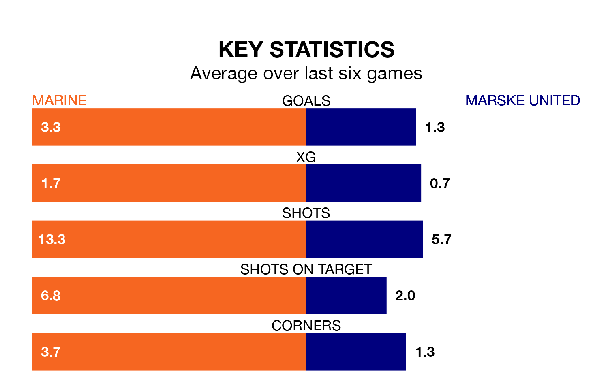

Relegation candidates Marske United face a challenge away against high-flying Marine at the Marine Travel Arena on Saturday.
Marske United are 19th in the Northern Premier League table, and have picked up seven wins and no draws in their 22 games to date.
Marine, meanwhile, are second in the standings with 55 points, having won 16 and drawn seven of their first 30 matches, and are eight points behind table-toppers Radcliffe Borough.
With 65 goals in 30 games so far this season, Marine are the league's second-highest scorers with 2.2 goals per game. And they are conceding fewer than average, letting in 36 goals at a rate of 1.2 per game.
Marske, meanwhile, are below average scorers, with 1.4 goals per game, compared to a league average of 1.7. They have conceded 2.4 goals per game.
The hosts are in fantastic form in Northern Premier League, with five wins and a draw from their last six games.
With three wins and three losses over that period, United's form is much worse – they have taken nine points from 18, compared to Marine's 16.
In the last 10 years, Marine and Marske have played each other on six occasions. Marine won five of them and Marske one.
On average, Marine scored 1.8 goals and Marske 0.8 in those matches.
Their last meeting was on October 7, when Marine won 4-2 away.
Marine's last match was on February 3, a 1-1 draw against Ilkeston Town.
Marske lost 2-0 against Morpeth Town last time out, on December 30.
Updated: 14:59 (UTC), 05/02/24